ClinicusMed · Dossiê Clinicus — Padrão de Excelência
O diagnóstico parasitológico de fezes (coproparasitológico/ovoscopia) é basicamente um exercício de reconhecimento visual: tamanho do ovo, forma do contorno, espessura e textura da casca, e o que tem dentro (célula única, mórula, larva, embrião hexacanto). Esse capítulo ensina o critério de identificação de cada ovo e depois mostra lâminas reais no Laminário, pra você treinar exatamente como vai ser cobrado na prática.
O Ascaris lumbricoides é o maior nematódeo intestinal humano, e seu ovo é um dos mais cobrados em prova prática justamente por ter 3 apresentações visuais diferentes, que podem confundir quem não treinou bastante.
| Variante | Aspecto | Por que acontece |
|---|---|---|
| Ovo fértil com mamelações | Forma oval/arredondada, casca espessa e mamilonada (superfície irregular, "enrugada"), cor castanho-dourada (bile-corada), conteúdo granular único | Apresentação mais clássica — a mamelação é a camada albuminoide externa |
| Ovo decorticado | Mesma estrutura interna, mas SEM a camada mamilonada externa — contorno liso | A camada albuminoide se perde (comum, não indica infertilidade) |
| Ovo infértil | Mais alongado, casca mais fina e irregular, conteúdo amorfo (sem organização celular definida) | Produzido por fêmeas sem fecundação — não eclode, não é infectante |
As duas espécies de uncinaria (vulgarmente "amarelão") produzem ovos praticamente indistinguíveis entre si ao microscópio — por isso, na prática, o laudo costuma ser só "ovo de uncinaria", sem especificar a espécie.
| Característica | Detalhe |
|---|---|
| Forma | Oval/elíptico, casca FINA e lisa, transparente/incolor |
| Conteúdo | Mórula (4-8 blastômeros) em fezes frescas — se a amostra demorar a ser examinada, pode já eclodir e mostrar uma larva dentro ou fora do ovo |
| Tamanho | Médio, menor que o ovo de Ascaris |
| Característica | Detalhe |
|---|---|
| Forma | Formato de barril/limão — bem característico, difícil de confundir |
| Tampões polares | 2 tampões (opérculos) transparentes e proeminentes, um em cada polo |
| Casca | Espessa, cor castanho-amarelada |
| Conteúdo | Massa granular única (ovo não embrionado ao ser eliminado) |
| Característica | Detalhe |
|---|---|
| Forma | Esférico/subesférico |
| Casca | Espessa, radiada/estriada (listras radiais características), castanho-escura |
| Conteúdo | Embrião hexacanto (oncosfera) — estrutura central com 6 ganchinhos, às vezes visíveis ao microscópio em maior aumento |
| Espécie | Os ovos de T. solium e T. saginata são morfologicamente IDÊNTICOS — não dá pra diferenciar só pelo ovo |
| Parasito | Forma | Casca | Conteúdo | Achado-chave |
|---|---|---|---|---|
| Ascaris lumbricoides (fértil) | Oval/arredondado | Espessa, mamilonada | Grânulo único | Superfície "enrugada" castanho-dourada |
| Ascaris decorticado | Oval | Espessa, lisa (sem mamelação) | Grânulo único | Igual ao fértil, mas sem a camada externa |
| Uncinarias (Ancylostoma/Necator) | Oval/elíptico | Fina, transparente | Mórula (células) | Casca fina + conteúdo celular segmentado |
| Trichuris trichiura | Barril/limão | Espessa | Granular | 2 tampões polares — inconfundível |
| Taenia sp. | Esférico | Espessa, radiada | Embrião hexacanto | Estrias radiais + 6 ganchinhos centrais |
Lâminas reais de microscopia, organizadas por espécie. Compare as variações de cada ovo e treine a identificação rápida, igual numa prova prática de bancada.
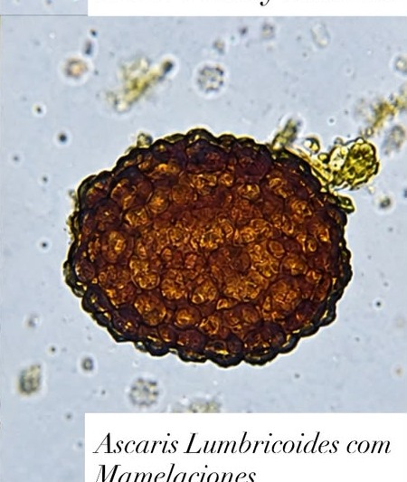
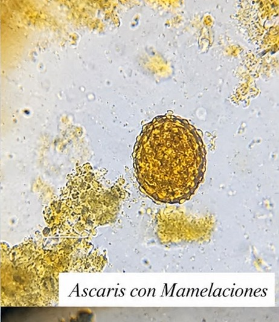
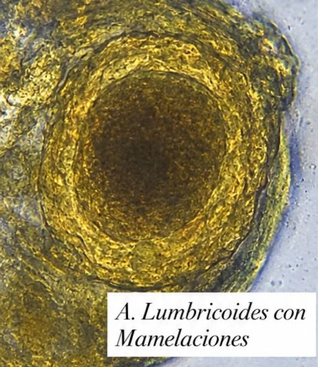
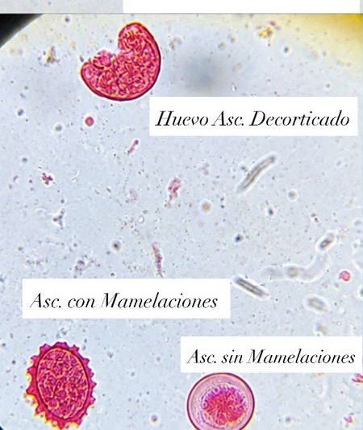
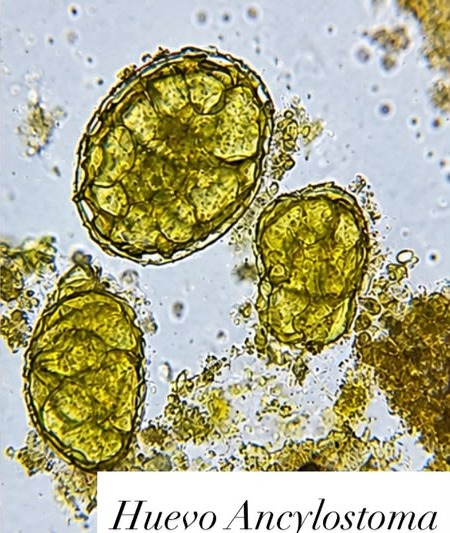
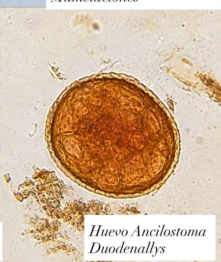
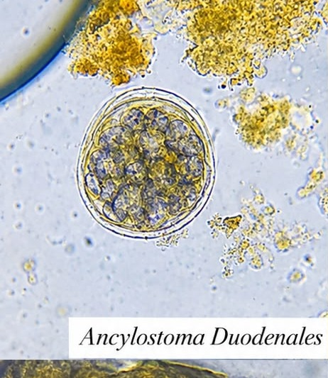
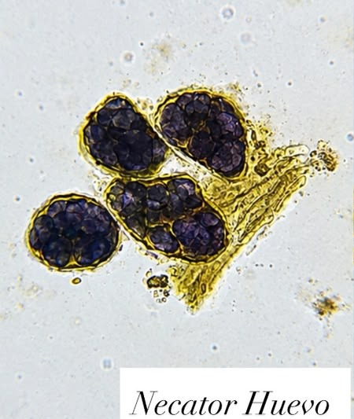
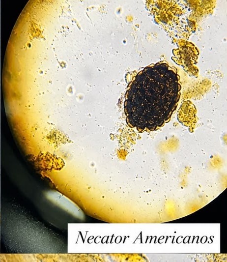
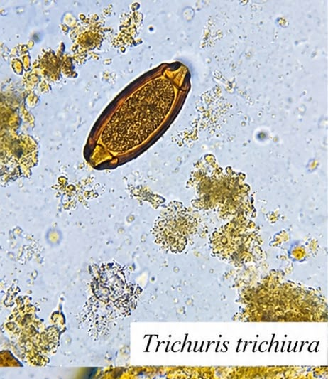
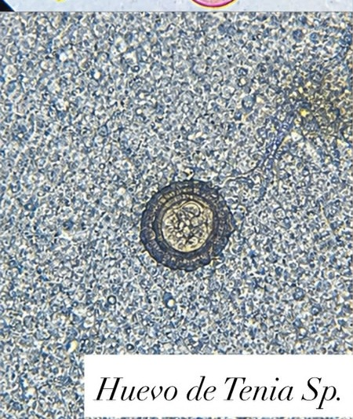
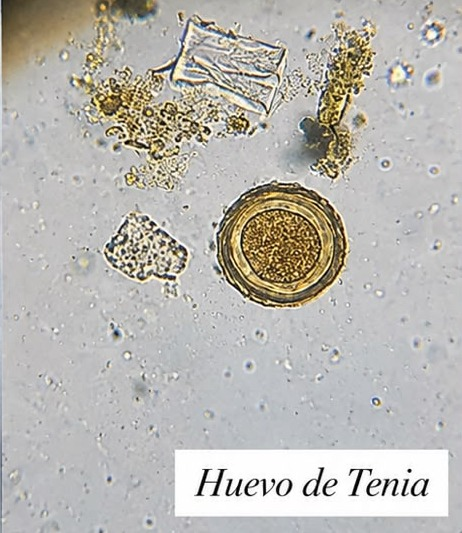
Vamos acompanhar um caso clínico aplicando os conceitos vistos nesse capítulo, em 3 níveis progressivos de profundidade.
A Clinicus selecionou este conteúdo para complementar seu estudo. Não substitui a leitura do resumo — o resumo ensina, o vídeo reforça.
Carregando recomendações...
O sistema guarda, no seu navegador, quais cards você já sabe bem e quais precisam voltar mais cedo — cada vez que você avalia um card, ele recalcula quando ele deve voltar.
10 questões, do mais básico ao mais puxado. Escolhe uma alternativa, depois clica em "Ver comentário completo" — vale a pena ler até quando você acerta, porque o comentário explica cada alternativa, não só a certa.